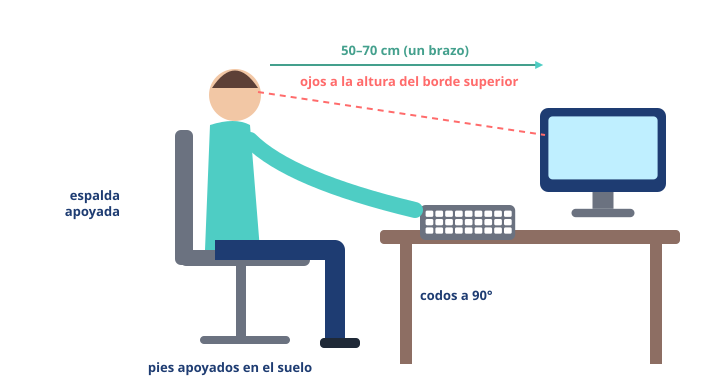

Módulo 10: Cuidado y mantenimiento del equipo
Pequeños hábitos para que tu equipo dure más y funcione mejor.
Informática básica · Módulo 10 de 12
Mantener el equipo en forma
🔄
ActualizaSistema y apps: corrigen fallos y agujeros de seguridad.🧹
LimpiaDesinstala lo que no uses y vacía Descargas y Papelera.🛡️
ProtegeAntivirus activo (en Windows, el que trae ya sirve) y solo descargas oficiales.💾
CopiaCopias de seguridad de lo importante.🔋
BateríaEvita calor extremo; no la dejes siempre al 0 %.🌬️
VentilaNo tapes las rejillas; quita el polvo con cuidado.Si el equipo va lento…
🔁 Reinicia
➜📋 Cierra programas que no uses
➜🧮 Mira el Administrador de tareas
➜🗑️ Libera espacio
➜🔄 Actualiza
En Windows, el Administrador de tareas (Ctrl+Mayús+Esc) muestra qué programas consumen más procesador y memoria. En el móvil, revisa en Ajustes qué apps gastan más batería y almacenamiento.
Cuídate tú también: ergonomía

Una buena postura evita dolores de espalda, cuello y vista.
- 🧘 Regla 20-20-20: cada 20 minutos, mira algo a 20 pies (unos 6 metros) durante 20 segundos.
- 🧘 Levántate y muévete al menos cada hora.
- 🧘 Buena iluminación, sin reflejos en la pantalla.
- 🧘 Evita pantallas justo antes de dormir.
🧩 El portátil va muy lento desde hace días. ¿Qué es lo primero y más sencillo?
🧩 ¿A qué altura debe quedar la pantalla?
Resumen: actualiza, limpia, protege, copia y ventila. Y cuida tu postura y tu vista.